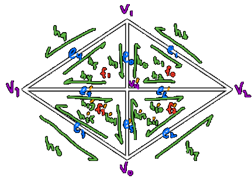
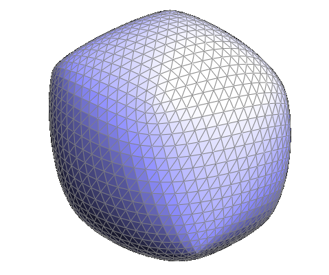
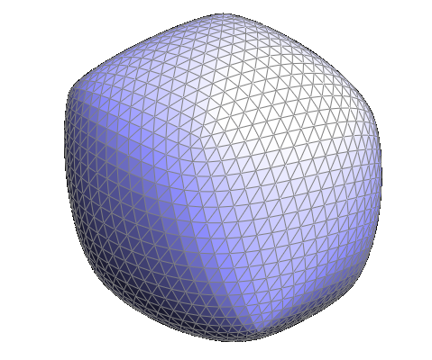

In this section I implemented de Casteljau's algorithm for bezier curves. de Casteljau's algorithm involves bisecting each line a certain percentage (t) between the control points in order to generate new control points. At each step the number of control points is decreased by one, so by performing this process until there is only one control point left we can generate a single point on the final curve.
By changing the percentage used to bisect the lines we can change where on the curve we are drawing. The final curve is defined by the algorithm performed at each value of t.
And by moving the points we can define new curves.
De Casteljau's algorithm extends fairly naturally into 3D surfaces. Instead of taking in a list of points, we instead work with a grid of points. We perform de Casteljau's algorithm as described before on each row in this grid. Iterating all the way through provides us with one point for each row. Now we have a column of individual points so we can run de Casteljau's algorithm again to get a final point on the surface. The total surface is then defined by evaluating this at every value for t in both stages of row and column.
In order to do shading calculations like phong shading it is important to calculate the normals of each vertex in the mesh. The process for this is relatively simple. Iterate over the faces that share this vertex (using a half-edge data structure). For each face, calculate it's area weighted normal by taking the cross product of 2 of the edges. Add all those normals together and normalize the result to get the final normal for the vertex.
Flat Shading
Phong Shading
In this step of the project I implemented the edge flip operation. Since we are using a half-edge data structure I drew out and labeled the half edges of the 2 triangles before and after the operation to assist in reassigning all the pointers correctly. This process went relatively smoothly. Writing everything out, while tedious, proved very helpful, especially with the more complicated mesh operations to come.
Before Flip
After Flip
The edge split operation was similar to implement, though this time it involved the creation of new vertices, edges, halfedges, and faces. Like before I drew out the structure to help with managing everything. This took a bit more debugging than the flip, but using the provided tools to follow the half edges it was relatively simple.
Before Split
After Split
The edge split method used in this problem does not work for edges on the boundaries of the mesh. So for a bit of an extra challenge as well as to allow for extra smoothing operations later I implemented a special case for boundary edges.
Now that we can flip and split edges I was able to implement loop subdivision.
Input

Step 1: Split Edges
The first step involves splitting every edge in the mesh. As you can see this creates some weird patterns though.
Step 2: Flip Edges
In order to fix these weird patterns we need to flip any edge that connects a new and old vertex. This fixes all the topology, but the mesh has not been smoothed at all yet.
Step 3: Move Vertices
Finally in order to actually smooth the mesh we need to move the new and old vertices using specific rules. This involves taking a weighted average of the surrounding vertices in order to calculate. While the movement of the vertices doesn't happen until after the splits and flips are finished, the calculation of the new positions actually happens first because the mesh is simpler at that time.
Smoothing With Boundaries
After implementing the boundary edge split in the previous part I was able to implement loop subdivision on meshes with boundaries. This did also involve a new rule for the weighted average to calculate the new positions of vertices on the boundary. (As described here)
Loop subdivision is far from perfect however. Let's see what happens if we try to smooth a cube.
 

This irregular shape happens because the degrees of the vertices are all different depending on which way the square is split into 2 triangles. One fix for this is to split all the faces into 4 triangles so that all the corner vertices have a degree of 6 like this.
There are other subdivision algorithms that handle this problem better. One of the most common ones is Catmull-Clark subdivion which requires the mesh to be defined by quads instead of triangles so it was not feasible to implement with the provided project code unfortunately.
Instead, I attempted to implement √3 subdivision (based on this paper here). This involved a new split method to split a face into 3 faces like this.
Before Split
After Split
Putting this together with a similar approach to loop subdivision we can increase the mesh resolution like this.
Input
Split Faces
Flip Edges
After 2 iterations of the √3 subdivision each original square has been split into 9 smaller squares.
Unfortunately updating the vertex position proved difficult with this method. The √3 algorithm is primarily designed for the case where the degree of each vertex is 6, and the case for extraneous vertices is nontrivial. Unfortunately the files I am working with primarily have degrees other than 6 for most vertices. In retrospect this was a bad algorithm to chose to implement. I was not able to get it working in time to present for this project. So at this moment the final "smoothed" result looks something like this. (after 3 subdivisions)
So my implementation of √3 subdivision was not particularly successful, but I decided to still share it here to show what I think went well, and what didn't.
Finally I experimented with importing custom .dae files. This is a file I modeled in Autodesk Maya.
0 Subdivisions
1 Subdivision
2 Subdivisions
And here is the final shaded product.